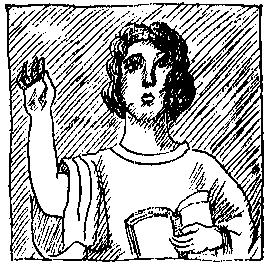
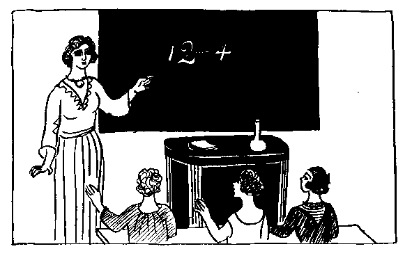

前がき
アナトール・フランスは本名をアナトール・チボーといい、フランスでも第一流の文学者であります。千八百四十四年、パリの商家に生まれ、少年の頃から書物の中で育ったといわれるくらい沢山の本を読みました。それもただ沢山の本を読んだというだけでなく、昔の偉い学者や作家の書いた本を実に楽しんで読んだのです。
彼は、詩、小説、戯曲、評論、伝記、その他いろいろなものを書きましたが、すべて、立派な作品として長く残るようなものが多く、中でも、小説と随筆とには、世界的な傑作が少なくありません。
ここにのせた「母の話」は、その追憶風の小説『ピエール・ノジエール』の中の一章で、これだけ読めばアナトール・フランスがみんなわかるというようなものではありませんけれど、まずまず、どんな人か見当がつくでしょう。
非常に物しりですが、わざわざむずかしいことをいわない。なんでもないことをいっているようで、よく読んでみると、なかなか誰にでもいえないことをいっている。ちょっと皮肉なところがありますが、優しい微笑をたたえた皮肉で、世の中の不正や醜さに、それとなく鋭い鋒先を向けています。
何よりも、力み返ること、大声を立てることが嫌いです。どんなことでも、静かに話せばわかり、また、静かに話し合わなければ面白くないという主義なのです。
熱情も時には素晴らしい仕事をさせる武器ですが、冷静は常に物の道理を考えさせる唯一の力です。
アナトール・フランスは、また、世界で屈指の名文家です。文章は平明で微妙で調子が整っていて、その上自然な重々しさをもっています。これを澄んだ泉の水にたとえた人がいますが、実際フランス語でこれを読むと、もう百倍も美しい文章だということがわかります。
千九百二十四年、すなわち大正十三年に、彼は死にました。これで一時代が終わったといわれるほど大きな事件でありました。（訳者）
「わたしには、どうも
想像力っていうものがなくってね。」と、母はよくいったものだ。
「
想像力がない」と
彼女がいったのは、それは
想像力といえば、
小説を作るというようなことだけをいうものと
思っていたからで、その
実、母は
自分では
知らずにいるのだけれど、およそ
文章では書きあらわせないような、まことに
愛すべき、一
種特別な想像力をもっていたのだ。母は
家庭向きの
奥さんという
性の人で、
家の中の用事にかかりっきりだった。しかし、
彼女のものの考え方には、どことなく
面白いところがあったので、
家の
中のつまらない
仕事もそのために
活気づき、
潤いが
生じた。母は、ストーヴや
鍋や、ナイフやフォークや、
布巾やアイロンや、そういうものに
生命を
吹きこみ、話をさせる
術を心得ていた。つまり彼女は、たくまないお
伽話の
作者だった。母はいろいろなお
話をして、
僕を
楽しませてくれたが、
自分ではなんにも考え
出せないと思っていたものだから、僕の持っていた
絵本の
絵を
土台にしてお
話をしてくれたものだ。
これから、その母の
話というのを一つ二つ
紹介するが、僕は
出来るだけ彼女の話しっ
振りをそのまま
伝えることにしよう。これがまた
素敵なのである。
学校
誰がなんといっても、ジャンセエニュ
先生の
学校は、
世界中にある女の子の
学校のうちで一番いい
学校です。そうじゃないなんて
思ったり、いったりする
者があったら、それこそ神様を
敬わないで、人の
悪口をいう人だといってやります。ジャンセエニュ
先生の
生徒はみんなおとなしくて、
勉強家です。ですから、この小さな人たちがじっとお
行儀よくしているところは、見ていてこんないい
気持のことはありません。ちょうど、それだけの
数の小さな
壜が
並んでいるようで、ジャンセエニュ
先生は、その
壜の一つ一つへ学問という
葡萄酒をつぎ
込んでいらっしゃるのだという
気がします。
ジャンセエニュ
先生は高い
椅子に
姿勢を
真直にして
腰掛けていらっしゃいます。
厳格ですけれど、
優しい
先生です。
髪はひっつめに
結って、
黒の
肩マントをしていらっしゃる、もうそれだけで、
先生を
敬う
気持がおこると一しょに、
先生がどことなく
好きになるのです。
ジャンセエニュ
先生は、なんでもよくお
出来になるのですが、この小さな
生徒たちに
先ず
計算の
仕方をお
教えになります。
先生はローズ・ブノワさんにこうおっしゃいます。

「ローズ・ブノワさん、十二から四つ
引いたら、
幾つ
残りますか。」
「四つ。」と、ローズ・ブノワさんは
答えます。
ジャンセエニュ
先生はこの
答ではお
気に
入りません。
「じゃ、あなたは、エムリーヌ・カペルさん、十二から四つ
引いたら、
幾つ
残りますか。」
「八つ。」と、エムリーヌ・カペルさんは
答えます。
そこで、ローズ・ブノワさんはすっかり
考え
込んでしまいます。ジャンセエニュ
先生のところに八つ
残っているということはわかっていますが、それが八つの
帽子か、八つのハンケチか、それとも、八つの
林檎か、八つのペンかということがわからないのです。もうずいぶん
前から、そこのところがわからないで
頭を
悩ましていたのでした。六の六
倍は三十六だといわれても、それは三十六の
椅子なのか、三十六の
胡桃なのかわからないのです。ですから、
算術はちっともわかりません。
反対に、
聖書のお話は
大変よく知っています。ジャンセエニュ
先生の
生徒のうちでも、
地上の
楽園とノアの
方舟の
事をローズ・ブノワさんのように
上手にお話しできる
生徒は一人もいません。ローズ・ブノワさんは、その
楽園にある花の
名前を
全部と、その
方舟に
乗っていた
獣の名前を全部
知っています。それから、ジャンセエニュ
先生と同じ数だけのお
伽話を知っています。
鴉と
狐の
問答、
驢馬と小犬の問答、
雄鶏と
雌鶏の問答などを
残らず知っています。
動物も
昔は口をきいたということを
人から
聞いても、ローズ・ブノワさんはちっとも
驚きません。
動物が今ではもう
口をきかないなんていう
人があったら、かえって驚いたでしょう。ローズ・ブノワさんには、
自分の家の大きな
犬のトムと
小さなカナリヤのキュイップの
言葉がちゃんとわかるのです。
実際、それはローズ・ブノワさんの
思っている通りです。
動物はいつの
時代にも口をききましたし、
今でもまだ口をきくのです。しかし、
鳥や
獣は自分のお友だちにしか口をききません。ローズ・ブノワさんは
動物が
好きで、
動物の方でもローズ・ブノワさんが
好きです。だからこそ
鳥や
獣のいうことがわかるのです。
相手の
気持をのみ
込むのには、お
互に
仲よくし合うことが
何よりです。
今日も、ローズ・ブノワさんは
読方で
習ったところをちっとも
間違えずに
諳誦しました。それで、いいお
点をいただきました。エムリーヌ・カペルさんも、
算術の
時間がよく
出来たので、いいお
点をいただきました。
学校から
帰って
来ると、エムリーヌ・カペルさんは、いいお
点をいただいたということをお母さんにお
話ししました。それから、その
後でこういいました――
「いいお
点って、なんの
役に
立つの、ねえ、お
母さん？」
「いいお点っていうものはね、なんの
役にも
立たないんですよ。」と、エムリーヌのお
母さんはお
答えになりました。「それだからかえって、いただいて
自慢になるのです。そのうちに、あなたもわかってきますよ。いちばん
尊い
御褒美っていうのは、
名誉にだけなって、
別に
得にはならないような
御褒美です。」
大きいものの
過ち
道というものは
川によく
似ています。それは、
川というものがもともと
道だからです。つまり、川というのは
自然に
出来た道で、人は七
里ひと
跳びの
靴をはいてそこを歩き
廻るのです。七
里ひと
跳びの
靴というのは
船のことです。だって、
船のことをいうのにこれよりいい
名前がありますか？ ですから、
道というのは、
人間が人間のためにこしらえた川のようなものです。
道は、川の
表面のように
平で、
綺麗で、
車の
輪や
靴の
底をしっかりと、しかし
気持よく
支えてくれます。これはわたしたちのお
祖父様方が
作って
下さったものの
中でもいちばん
立派なものです。このお
祖父様方はお
亡くなりになった
後にお
名前が
残っていません。わたしたちは、ただそのお
祖父様方がいろいろいいことをして
下さったということを
知っているだけです。ほんとうに
有難いものですよ、
道っていうものは。そうでしょう、
道があるお
蔭で、
方々の
土地に出来る
品物がどんどんわたしたちのところへ
運ばれて来ますし、お
友だち
同士も
楽に
往ったり
来たりすることが出来ます。
それで
今日も、お
友だちのところへ行こうと思って、そのお友だちはジャンというのですが、ロジェとマルセルとベルナールとジャックとエチエンヌとは
国道へさしかかりました。
国道は日に
照らされて、きいろい
綺麗なリボンのように
牧場や
畑に
沿って先へと
伸び、町や村を通りぬけ、人の話では、
船の見える海まで
続いているということです。
五人の
仲間はそんな
遠くまでは行きません。けれども、お
友だちのジャンの
家へ行くのには、たっぷり一キロは歩かなければならないのです。
そこで五人は
出かけました。お
母さんにちゃんとお
約束をしたので、五人だけで
行ってもいいというお
許しが出たのです。ふざけないで歩くこと、
決して
傍道をしないこと、馬や車をよけること、五人のうちで一
番小さいエチエンヌのそばを決して
離れないこと、そういうお
約束をして
来たのです。
そして五人は
出かけました。一
列になって
規則正しく進んで行きます。これくらいきちんとして出かければ、
申し
分はありません。しかし、それほど
立派で
一糸乱れないなかに、一つだけいけないところがあります。エチエンヌが
小さすぎるのです。
エチエンヌは非常な
勇気を
奮い起こします。一
生懸命、足を
速めます。
短い
脚を
精いっぱいにひろげます。まだその上に、
腕を
振ります。しかし、なんといっても、
小さすぎます。どうしても
仲間について行けません。
遅れてしまいます。これはわかりきったことです。
哲学者といわれる人たちは、同じ
原因があればいつでも
同じ
結果になるということを知っています。しかし、ジャックにしてもベルナールにしても、マルセルにしても、またロジェにしても、
哲学者ではありません。四人は
自分の
脚に
応じた歩き方をします。
可哀そうなエチエンヌも、やっぱり自分の
脚相応に
歩いているのです。
調子が
揃う
筈がありません。エチエンヌは
走ります。
息を
切らします。声を出します。それでも
遅れてしまいます。
大きい人たちは、つまりお
兄さんたちなんですから、
待ってやればいいのに、エチエンヌの足にあわせて
歩いてやればいいのにと思うでしょう。ところがそれは
駄目なのです。そんな
心掛は、この
子たちにはそもそも
註文するだけ
無理なのです。そういうところは、この子たちも
大人も
同じです。「
進めッ」と、
世間の
強い人たちはいいます。そうして
弱い
人たちをおいてきぼりにします。ですが、このお
話がどうなるか、おしまいまできいていらっしゃい。
ところで、この四
人の、大きい人たち、
強い人たち、
元気な
人たちは、
急に
立ちどまります。
地面に一
匹の生きものが
跳んでいるのを見つけたのです。なるほど
跳ぶはずです、その
生きものというのは
蛙で、
道ばたの
草原まで行こうと思っているのです。その草原は
蛙さんのお国です。蛙さんには
大切なお国です。そこの
小川のそばに自分のお
屋敷があるんですから。そこで
蛙さんは
跳んで行きます。
蛙というものは、
天然自然の
細工物として、これはたいしたものです。
この蛙は
緑色です。まるで青い木の葉のような
恰好をしています。そうして、そういう
恰好をしているので、なんだか
素晴らしくみえます。ベルナールとロジェとジャックとマルセルは、それを
追いかけはじめます。エチエンヌのことも、
真黄色な
綺麗な道のことも忘れてしまいます。お
母さんとのお
約束も
忘れてしまいます。もう四人は
草原の中へはいっています。しばらくすると、草が
深く
茂っている
柔かい
地面に、足がめり
込んでいくのがわかります。もう少し行くと、
膝のところまで
泥の中にはまり
込みます。草で見えなかったのですが、そこは沼になっていたのです。
四人は、やっとこさでそこから足をひきぬきました。
靴も、
靴下も、
腓も
真黒です。緑の
草原の
精が、いいつけを
守らない四人の者に、こんな
泥のゲートルをはかせたのです。
エチエンヌはすっかり
息を切らして四人に
追いつきます。四人がそんなゲートルをはかされているのを見ると、
喜んでいいのか、
悲しんでいいのかわからないような
気持です。そこで、大きい人や
強い人には
大変な
災難が降りかかって
来るということを、
無邪気な頭の中でいろいろと
考えてみます。ゲートルをはかされた四人の
方は、しおしおとひっかえします。だって、そんな
恰好をして、お
友だちのジャンのところへ
行けるはずがないでしょう？ 四人がお家へ
帰ったら、みんなのお
母さんは、その
脚をごらんになって、四人が
悪いことをしたということがちゃんとおわかりになるでしょう。
反対に、
小さなエチエンヌの
清浄無垢なことは、その
薔薇いろの
腓に、
後光のように
現れているでしょう。
挿絵 大野隆徳